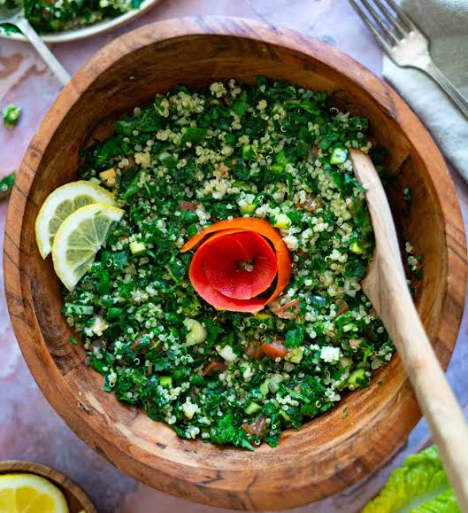
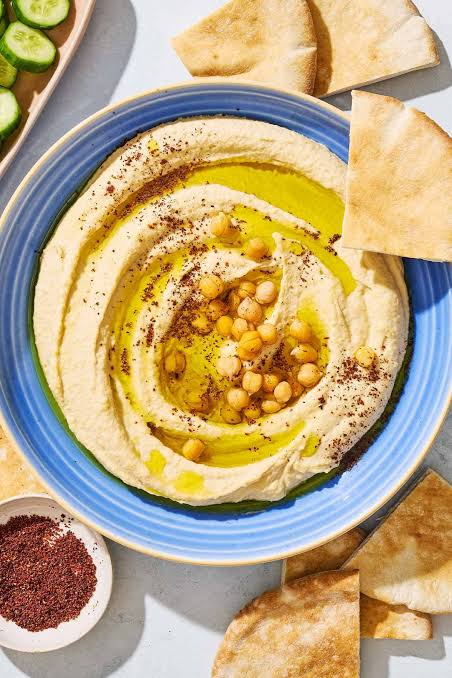
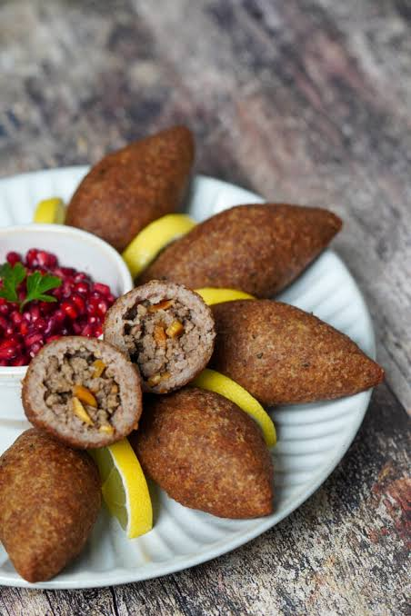
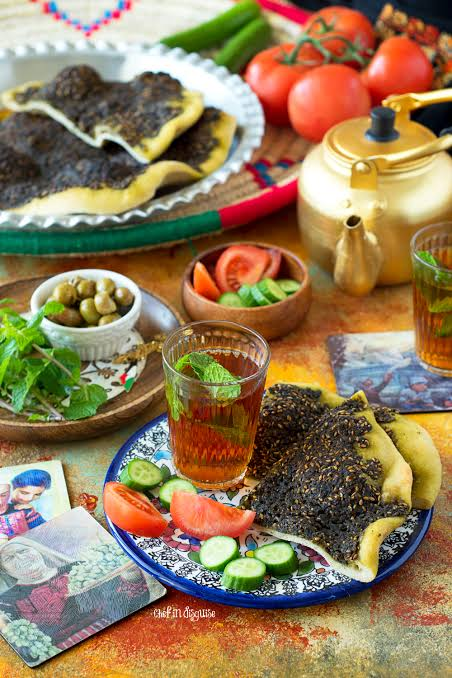

Tabbouleh
A parsley salad with tomatoes, mint, onion, and a small amount of bulgur wheat, dressed with lemon and olive oil.
My Lebanon Guide
Lebanese food is built around sharing — fresh vegetables, olive oil, and bread at the center of almost every table.

A parsley salad with tomatoes, mint, onion, and a small amount of bulgur wheat, dressed with lemon and olive oil.

A dip made from blended chickpeas, tahini, lemon, and garlic, usually served with a pool of olive oil on top.

A mix of fine bulgur and minced meat, shaped and either fried or baked, often considered the national dish.

A flatbread topped with za'atar (a thyme and sesame blend) or cheese, baked fresh and eaten for breakfast.